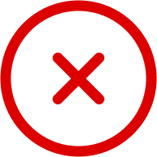

Anda Terdeteksi Campak
- Hindari kontak dengan individu lain terutama yang belum mendapatkan vaksin campak.
- Cukupkan istirahat dan minum untuk membantu tubuh dalam melawan infeksi.
- Hindari paparan langsung dengan cahaya yang terang untuk meringankan gejala.
- Segera periksakan diri ke dokter atau fasilitas pelayanan kesehatan terdekat untuk mendapatkan konfirmasi diagnosa dan mendapatkan perawatan yang tepat dengan membawa formulir di bawah ini.